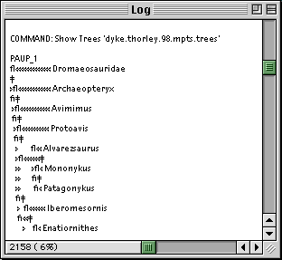

In order for the content of the Log window to be displayed correctly the
 PAUP Font File should be placed in the Fonts folder in the System
Folder.
PAUP Font File should be placed in the Fonts folder in the System
Folder.
If the PAUP Font File is not installed the tree drawings will look something like this...

Note RadCon will only use this font if it is installed in the Fonts folder before RadCon is opened.
The PAUP Font File is distributed with RadCon with permission from Dave Swofford.
Go to the Table of Contents.
This page is maintained by joe@poissonconsulting.ca
© Copyright 1999, 2000, 2001, Joseph L. Thorley and Mark Wilkinson. All rights reserved.